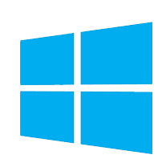

Skills
Operating Systems
- 


Development
- {{skill}}
Tools
Development
- {{devTool}}
Design
- {{designTool}}
Master of Science, Computer Science
September 2016 - Present
Current GPA: 3.5
Bachelor of Science, Computer Engineering Technology
Graduated, August 2015
GPA: 3.7
Dean's List
Fall 2011 - August 2015
Wentworth Leadership Institute Member
Spring 2012 - August 2015
President's Award Recipient
Spring 2015
August 2015 - Present
Developed and maintained an embedded software service that manages the installation and upgrades of virtualized applications running in the VMAX storage array. Currently doing front-end web development for the Unisphere Work Load Processing application team.
July 2017 - Present
Collaborate with Unisphere application developers to further enhance the work load processing application UI.
January 2016 - January 2017
Collaborate with various engineering and development teams to deliver cloud services as an embedded application on the VMAX3. Participate in design proof of concepts projects and design reviews. Support further development of the virtualized applications software platform.
September 2015 - December 2015
Proof of concept performance analysis of embedded NAS UXFS64 file systems within the VMAX3 storage array.
Objective: Write a program that interacts with the Symmetrix storage array API to promote file system metadata to FAST storage engine for performance optimization. Generate synthetic system workload for file system performance characterization and resource utilization analysis.
January 2014 - August 2015
Test the reliability and functionality of SAS and SATA hard drives for implementation in large scale network storage systems. Implement and design Python scripts for test automation to issue various commands to the drives. Performed HDD firmware testing to identify firmware bugs that could cause issues in the field. Use data analysis techniques to determine trends in drive failures which were included in weekly reports. Developed software, testing procedures and documentation for various device level functional tests. Learn about SAS and SATA drives commands and protocols.
Developed a desktop GUI for test automation and simplification using the MFC (Microsoft Foundation Class) library within a Visual Studio development environment.
November 2011 – December 2013
Knowledgeable of all Apple products and customer solutions. Provide customers with various opportunities to interact with current technology. Assist customers with technical and non-technical problems regarding Apple products. Deliver exceptional customer service to build long lasting relationships.
June 2013 - August 2013
Provided Level 2 support to all internal executive employees from contractors to VPs. Deployed Windows 7 32-bit Enterprise Project to all business machines during company REIT conversion. Maintained all HP business laptops and desktops while doing hardware and software repairs. Collaborated with global IT support team to ensure technical resources were accessible. Assisted remote employees working in several corporate and field locations around North America.